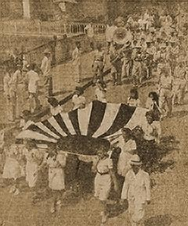

|
j
a v a s c r i p t |
May 28, 1944 — Sunday

The Imperial Navy Ensign
Navigates Manila Streets The Tribune prints two Navy Day speeches. Naval attaché Rear Admiral Hideo Hiraide says we don't have it as tough as the Americans do. Captain Inuzuka of the Nippon Navy says: The strategy adopted by Fleet Admiral Togo embodies the very essence of Japan's war tactic.... Allow the enemy to cut your flesh and then cut his bone; allow the enemy to cut your bone and then pierce his heart. He admits the Japanese can't stop the U.S. Navy in New Guinea and the Marshalls as both are too far from Japan. In saying that we need air raid shelters, he infers that the Philippines is also too far to protect. Commentator: "Nippon now ready for action; Navy will annihilate U.S. Fleet." [Page Inuzuka!] "The Arafura Sea and Coral seas would be reduced to a defenseless highway to Australia again, as a result of which Japan's advance to Australia would be most inevitable." This confirms the U.S. Navy ousted the Japanese from the Coral Sea area. NEWS: Americans land in Biak, Schouten Islands (off New Guinea). This is the fifth landing in some five weeks: Hollandia, Aitape, Wake, Sarmi and Biak. MacArthur is reported to have said the advance in New Guinea has been faster and easier than he thought possible eleven months ago, and that with this landing, the campaign for New Guinea is over. |
|
|
|
|